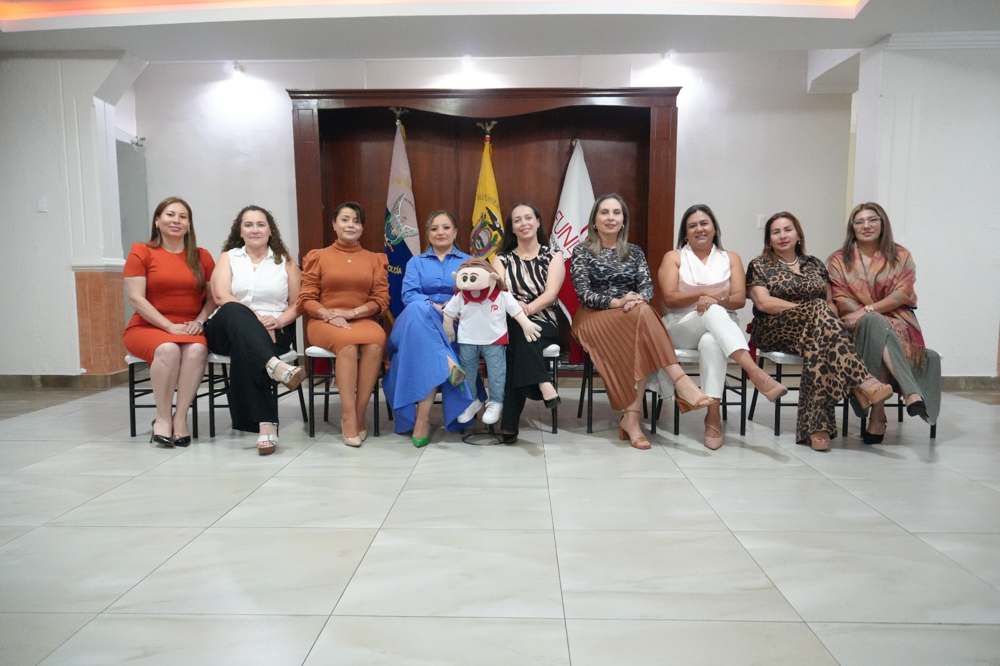
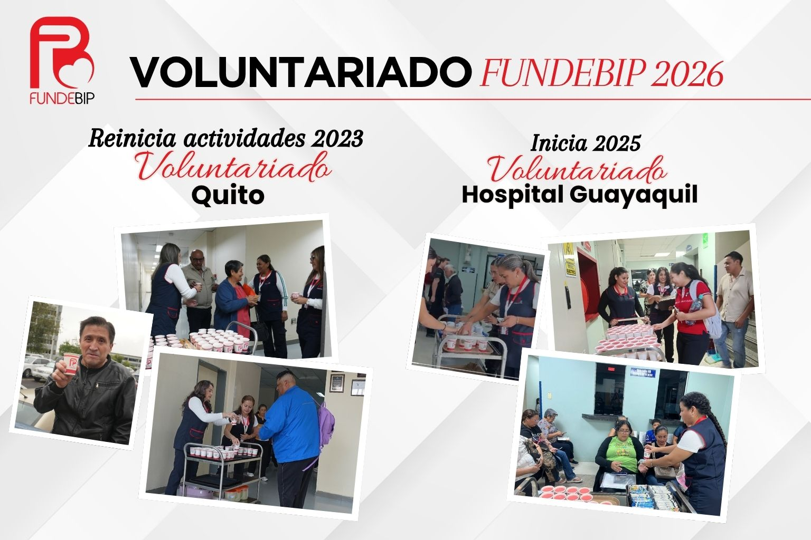
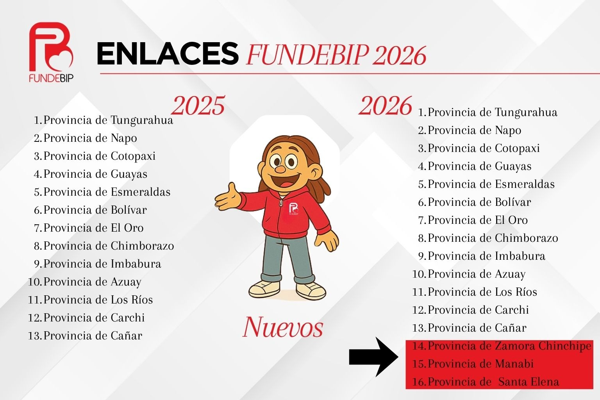
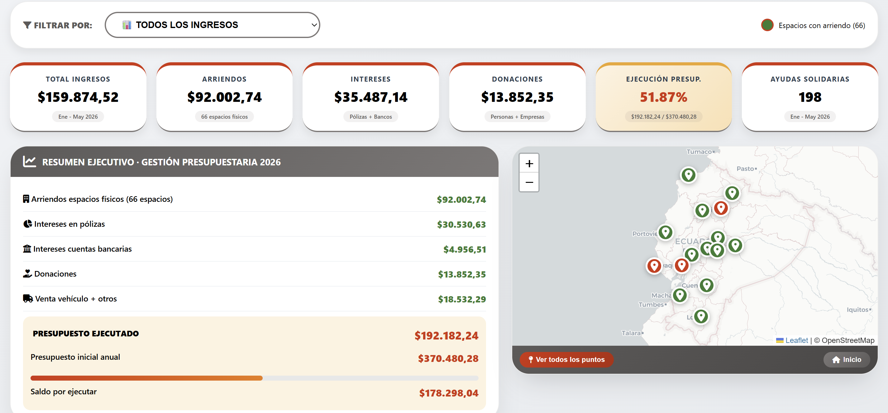
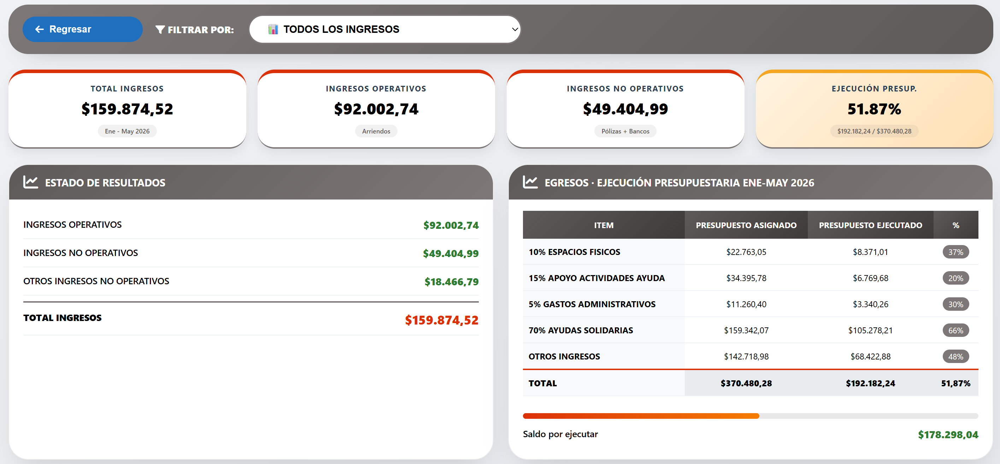
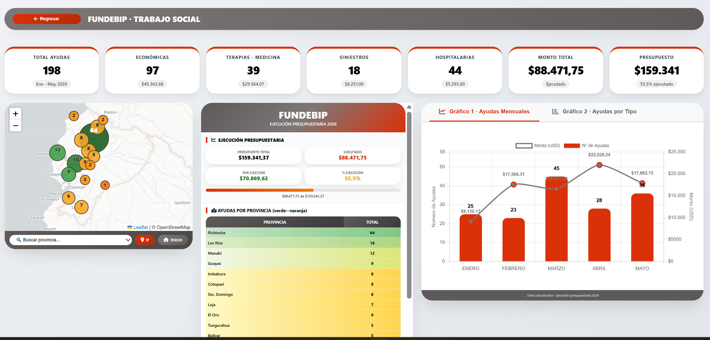
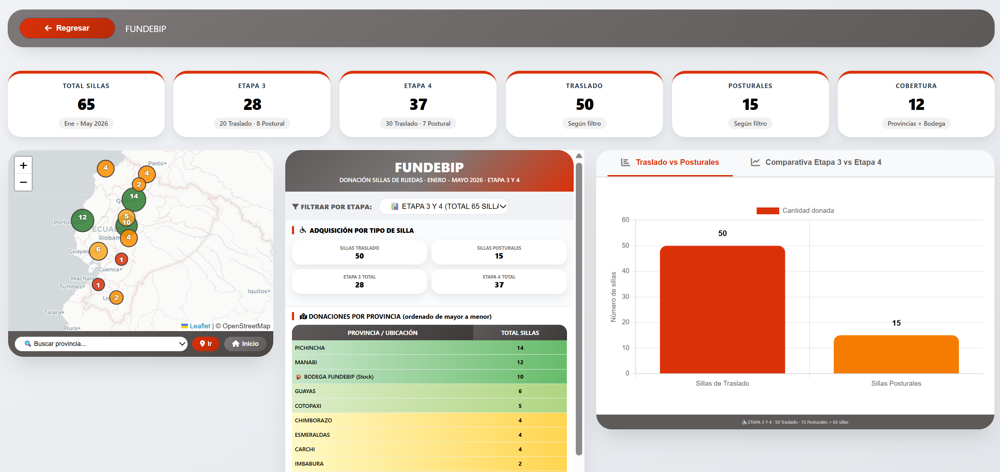
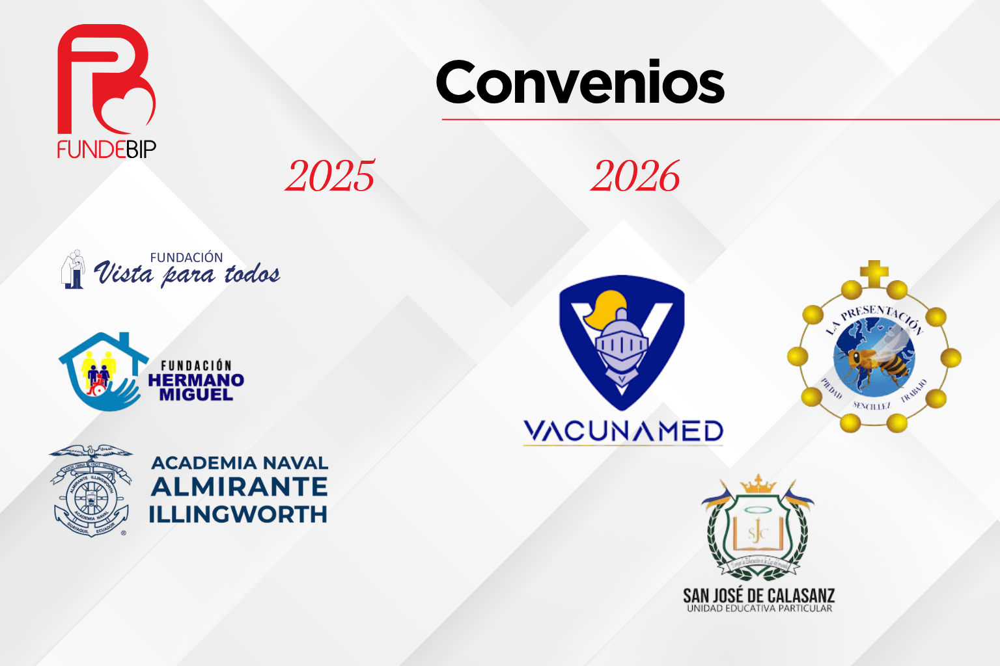
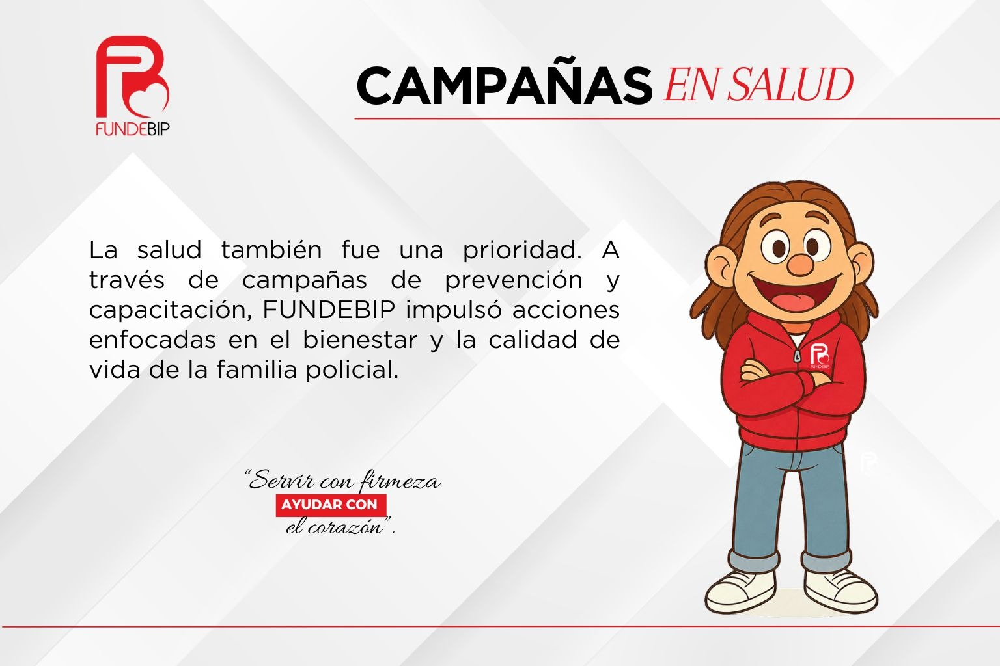
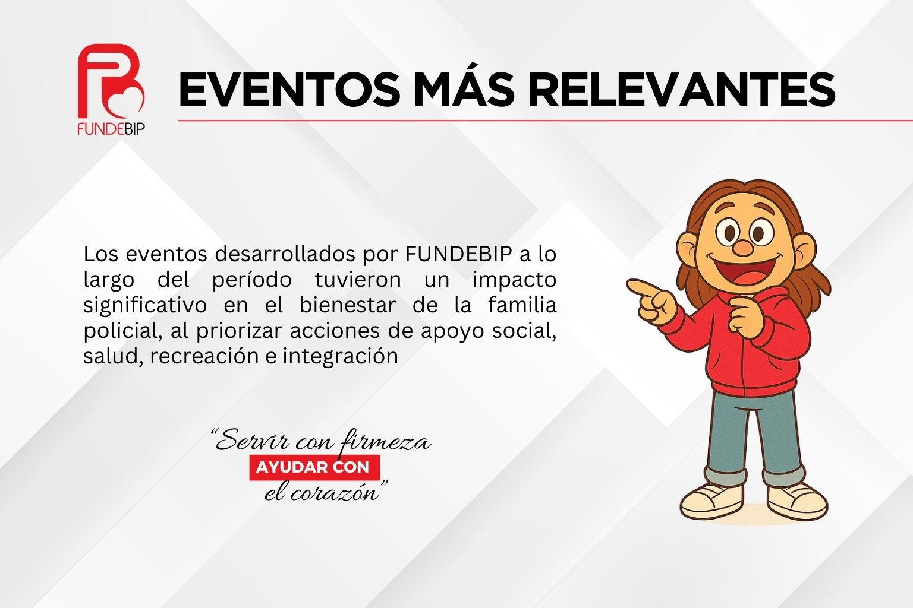

Liderazgo Institucional
Sra. Alexandra Robelly de Dávila
Directorio
Estructura de liderazgo.

Directorio Actual
El directorio de FUNDEBIP está integrado por mujeres comprometidas con el bienestar de los servidores policiales y sus familias, asegurando una gestión transparente, ética y eficiente de los recursos.
Voluntariado y Enlaces


Trabajo realizado durante el 2025.
Solidaridad que transforma vidas y fortalece a la familia policial.
De enero a mayo de 2026, FUNDEBIP impulsó ayudas, capacitación, inclusión y bienestar para la familia policial.
El video muestra testimonios reales de servidores policiales y sus familias que han sido beneficiados por los programas de la fundación.
Indicadores de Gestión
Gestión de Ingresos
Seguimiento de programas de apoyo social

Este dashboard permite visualizar de forma clara los programas de trabajo social ejecutados por FUNDEBIP, mostrando el impacto en los servidores policiales y sus familias.
Estado de Situación Financiera y de Resultados
Al 31 de mayo de 2026

Visualización integral de las ayudas sociales entregadas a nivel nacional, permitiendo evaluar el impacto y cobertura de los programas institucionales.
198 Ayudas Entregadas.
Seguimiento de ayudas sociales a nivel nacional

Visualización integral de las ayudas sociales entregadas a nivel nacional, permitiendo evaluar el impacto y cobertura de los programas institucionales.
Donaciones Entregadas 65 Sillas de Ruedas.
Seguimiento de ayudas sociales a nivel nacional

Visualización integral de las ayudas sociales entregadas a nivel nacional, permitiendo evaluar el impacto y cobertura de los programas institucionales.
Convenios
VACUNAMED S.A. - U.E. "La Presentación".

Visualización integral de las ayudas sociales entregadas a nivel nacional, permitiendo evaluar el impacto y cobertura de los programas institucionales.
Campañas de Salud
Apoyando a nuestra familia Policial

La Fundación para el Desarrollo y Bienestar del Policía impulsa programas de prevención y capacitación que fortalecen la salud y el bienestar de la comunidad policial y sus familias. A través de jornadas educativas sobre el Virus del Papiloma Humano (VPH)
Eventos Relevantes
Actividades que fortalecen nuestra comunidad

Las actividades impulsadas por FUNDEBIP fortalecieron de manera directa la calidad de vida de los hogares policiales, creando espacios de integración y desarrollo comunitario.
Video FUNDEBIP 2026
Este video recoge los momentos más significativos de la Navidad 2025, una temporada en la que la solidaridad, la unión y el compromiso se hicieron presentes.